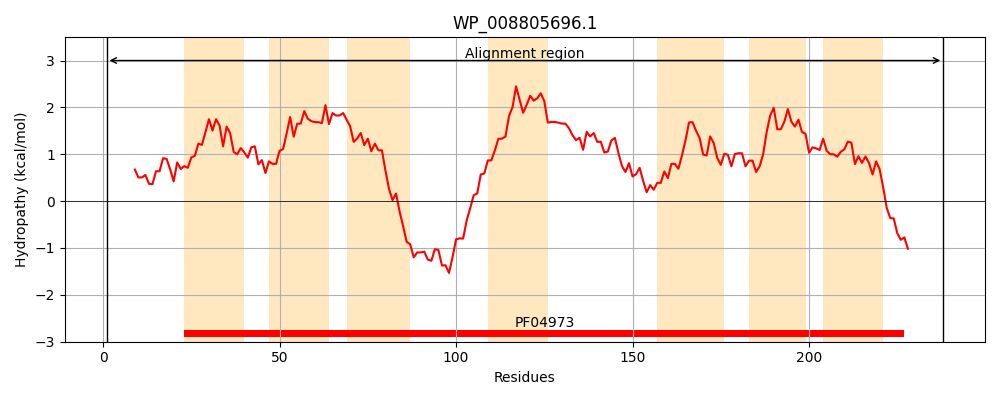
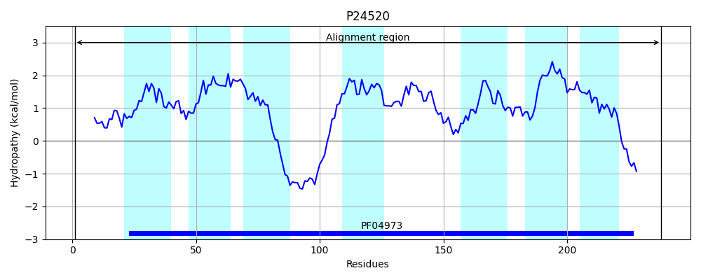
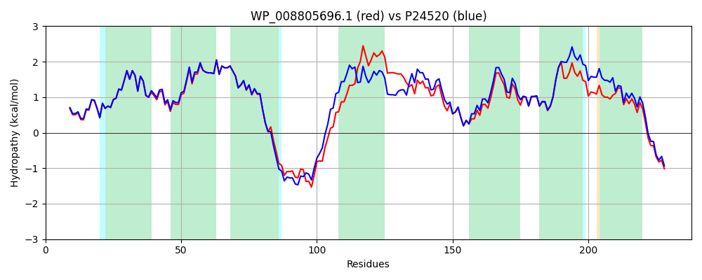

Hit Accession: P24520
Hit TCID: 4.B.1.1.1
Hit Description: gnl|BL_ORD_ID|9503 gnl|TC-DB|P24520|4.B.1.1.1 PNUC PROTEIN - Salmonella typhimurium.
Mach Len: 238
e:0.000000
Query TMS Count : 7
Hit TMS Count: 7
TMS-Overlap Score: 6.350000
Predicted Substrates:CHEBI:25526;N-glycosylnicotinamide
BLAST Alignment:
Score: 1080 , Bit scores: 420 bits, E-value: 1.9e-151, Alignment length: 238, Percentage identity: 85
Query: 1 MDFFSTQNILVHIPIGAGGYDLSWIEAVGTIAGLLCIWLASLEKISNYAFGLVNVTLFAIIFFQIQLYASLLLQLFFFAANVYGWYAWSRQSSNHEAELQIRWLPRSKALGWLAACVVAIGLLTLFINPFFAFLTRIAVSLMQALGLQVSMPVLQPDAFPFWDSCMTVLSVVAMILMTRKYVENWLLWVIVNVISVVIFARQGVYAMSLEYLLLTFIALNGSRMWINSARERGSHAFS 238
MDFFST NIL+HIPIGAGGYDLSWIEAVGTIAGLLCIWLASLEKISNY FGLVNVTLFAIIFFQIQLYASLLLQLFFFAAN+YGWYAWSRQ+ +++AEL+IRWLP KA+ WLA CV+AIGL+T +I+P FA LTR+AV++MQ LGLQV+MPVLQPDAFPFWDSCM VLS+VAMILMTRKYVENWLLWVI+NVISVVIFA QGVYAMSLEYL+LTFIA+NGSR+WINSARERGS A S
Sbjct: 1 MDFFSTHNILIHIPIGAGGYDLSWIEAVGTIAGLLCIWLASLEKISNYFFGLVNVTLFAIIFFQIQLYASLLLQLFFFAANIYGWYAWSRQTKDNQAELKIRWLPLPKAMAWLAICVIAIGLMTRYIDPVFAVLTRVAVAIMQMLGLQVTMPVLQPDAFPFWDSCMMVLSIVAMILMTRKYVENWLLWVIINVISVVIFALQGVYAMSLEYLILTFIAVNGSRLWINSARERGSRALS 238 | Protein Hydropathy Plots: |
|---|
|  |  |
Pairwise Alignment-Hydropathy Plot:
|
|---|
|  |